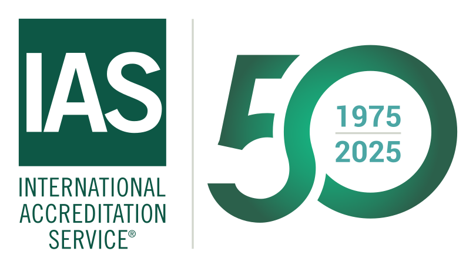
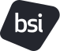
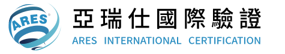
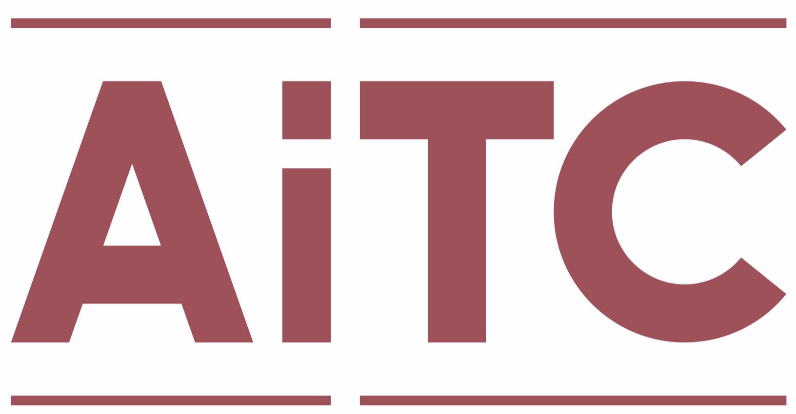

延伸閱讀 ／ 官方資料
相關資源。
從標準及指引、符合性評鑑，到政府之研究發展計畫。
找到理解要求、準備行動的參考依據。
01 ／ 參考依據
標準及指引
從官方資料理解要求，找到適用的標準與方法。
認證機構
TAF
財團法人全國認證基金會

IAS
International Accreditation Service

ANAB
ANSI National Accreditation Board
JAB
Japan Accreditation Board
驗證機構
TAF 認證範圍包含 ISO/IEC 27001:2022 的管理系統驗證機構。依認證編號排列。
- TAF 認證資料 · MS001
SGS
台灣檢驗科技股份有限公司

TAF 認證資料 · MS004BSI
新加坡商英國標準協會集團私人有限公司臺灣分公司
- TAF 認證資料 · MS012
AFNOR
法標國際認證股份有限公司
- TAF 認證資料 · MS013
TCIC
環奧國際驗證有限公司

TAF 認證資料 · MS017ARES
亞瑞仕國際驗證股份有限公司
- TAF 認證資料 · MS020
ETC
財團法人台灣商品檢測驗證中心
- TAF 認證資料 · MS031
TÜV NORD
台灣德國北德技術監護顧問股份有限公司

TAF 認證資料 · MS034AiTC
愛台灣驗證股份有限公司
- TAF 認證資料 · MS035
GQA
通用國際驗證服務股份有限公司
名錄查核：2026 年 9 月 7 日。認證範圍與狀態可能異動，請以各機構的 TAF 認證資料為準。
03 ／ 計畫範例
政府之研究發展計畫
了解計畫方向、申請要求與應備資料。
以上為政府計畫範例，服務不限於所列計畫。實際申請條件與受理期間，請參閱各計畫最新公告。
官方連結查核：